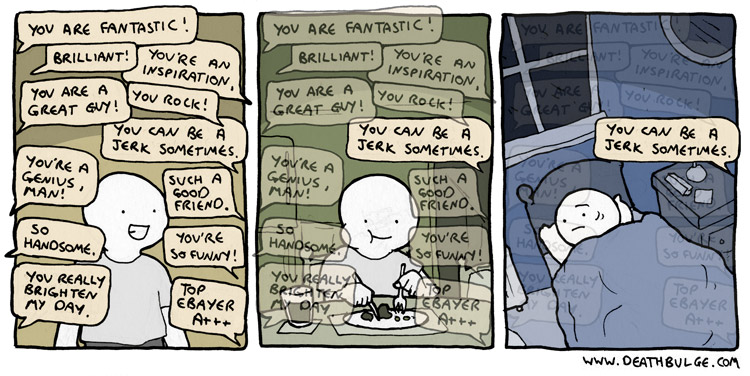

Teaching as a Performance Art
Many people assume that teachers are born, not made. From politicians to researchers and teachers themselves, reformers have designed systems to find and promote those who can teach and eliminate those who can't. But as Elizabeth Green explains in Building a Better Teacher [1], that assumption is wrong, which is why educational reforms based on it have repeatedly failed.
The book is written as a history of the people who have put that puzzle together in the US. Its core begins with a discussion of what James Stigler discovered during a visit to Japan in the early 1990s:
Some American teachers called their pattern "I, We, You": After checking homework, teachers announced the day's topic, demonstrating a new procedure (I)… Then they led the class in trying out a sample problem together (We)… Finally, they let students work through similar problems on their own, usually by silently making their way through a worksheet (You)…
The Japanese teachers, meanwhile, turned "I, We, You" inside out. You might call their version "You, Y'all, We." They began not with an introduction, but a single problem that students spent ten or twenty minutes working through alone (You)… While the students worked, the teacher wove through the students' desks, studying what they came up with and taking notes to remember who had which idea. Sometimes the teacher then deployed the students to discuss the problem in small groups (Y'all). Next, the teacher brought them back to the whole group, asking students to present their different ideas for how to solve the problem on the chalkboard… Finally, the teacher led a discussion, guiding students to a shared conclusion (We).
It's tempting but wrong to think that this particular teaching technique is some kind of secret sauce. The actual key is revealed in the description of Akihiko Takahashi's work. In 1991, he visited the United States in a vain attempt to find the classrooms described a decade earlier in a report by the National Council of Teachers of Mathematics. He couldn't find them. Instead, he found that American teachers met once a year (if that) to exchange ideas about teaching, compared to the weekly or even daily meetings he was used to. What was worse:
The teachers described lessons they gave and things students said, but they did not see the practices. When it came to observing actual lessons–watching each other teach–they simply had no opportunity… They had, he realized, no jugyokenkyu. Translated literally as "lesson study", jugyokenkyu is a bucket of practices that Japanese teachers use to hone their craft, from observing each other at work to discussing the lesson afterward to studying curriculum materials with colleagues. The practice is so pervasive in Japanese schools that it is…effectively invisible.
And here lay the answer to [Akihiko's] puzzle. Of course the American teachers' work fell short of the model set by their best thinkers… Without jugyokenkyu, his own classes would have been equally drab. Without jugyokenkyu, how could you even teach?
So what does jugyokenkyu look like in practice?
In order to graduate, education majors not only had to watch their assigned master teacher work, they had to effectively replace him, installing themselves in his classroom first as observers and then, by the third week, as a wobbly…approximation of the teacher himself. It worked like a kind of teaching relay. Each trainee took a subject, planning five days' worth of lessons… [and then] each took a day. To pass the baton, you had to teach a day's lesson in every single subject: the one you planned and the four you did not… and you had to do it right under your master teacher's nose. Afterward, everyone–the teacher, the college students, and sometimes even another outside observer–would sit around a formal table to talk about what they saw.
[Trainees] stayed in…class until the students left… They talked about what [the master teacher] had done, but they spent more time poring over how the students had responded: what they wrote in their notes; the ideas they came up with, right and wrong; the architecture of the group discussion…
…By the time he arrived in [the US], [Akihiko had] become…famous… giving public lessons that attracted hundreds, and, in one case, an audience of a thousand. He had a seemingly magical effect on children… But Akihiko knew he was no virtuoso. "It is not only me," he always said… "Many people." After all, it was his mentor…who had taught him the new approach to teaching… And [he] had crafted the approach along with the other math teachers in [his ward] and beyond. Together, the group met regularly to discuss their plans for teaching… [At] the end of a discussion, they'd invite each other to their classrooms to study the results. In retrospect, this was the most important lesson: not how to give a lesson, but how to study teaching, using the cycle of jugyokenkyu to put…work under a microscope and improve it.
Putting work under a microscope in order to improve it is commonplace in sports and music. A professional musician, for example, will dissect half a dozen different recordings of "Body and Soul" or "Smells Like Teen Spirit" before performing it. They would also expect to get feedback from fellow musicians during practice and after performances. Many other disciplines work this way too: the Japanese drew inspiration from Deming's ideas on continuous improvement in manufacturing, while the adoption of code review over the last 15 years has done more to improve everyday programming than any number of books or websites.
But this kind of feedback isn't part of teaching culture in the US, the UK, Canada, or Australia. There, what happens in the classroom stays in the classroom: teachers don't watch each other's lessons on a regular basis, so they can't borrow each other's good ideas. The result is that every teacher has to invent teaching on their own. They may get lesson plans and assignments from colleagues, the school board, a textbook publisher, or the Internet, but each teacher has to figure out on their own how to combine that with the theory they've learned in education school to deliver an actual lesson in an actual classroom for actual students.
Demonstration lessons, in which one teacher is in front of a room full of students while other teachers observe, seem like a way to solve this. However, Fincher and her colleagues studied how teaching practices are actually transferred using both a detailed case study [2] and analysis of change stories [3]. The abstract of the latter paper sums up their findings:
Innovative tools and teaching practices often fail to be adopted by educators in the field, despite evidence of their effectiveness. Naïve models of educational change assume this lack of adoption arises from failure to properly disseminate promising work, but evidence suggests that dissemination via publication is simply not effective… We asked educators to describe changes they had made to their teaching practice and analyzed the resulting stories… Of the 99 change stories analyzed, only three demonstrate an active search for new practices or materials on the part of teachers, and published materials were consulted in just eight of the stories. Most of the changes occurred locally, without input from outside sources, or involved only personal interaction with other educators.
Barker et al found something similar [4]:
Adoption is not a "rational action," however, but an iterative series of decisions made in a social context, relying on normative traditions, social cueing, and emotional or intuitive processes… Faculty are not likely to use educational research findings as the basis for adoption decisions. Faculty become aware of innovative practices either because a problem leads them to intentionally seek them out, or they hear about them through funded initiatives, conferences and journals, or from colleagues. They experiment (or not) for several reasons, depending on institutional expectations and policies, perceived costs and benefits for themselves and students, and the influence of role models. Faculty tend to trust other faculty whose work and institutional context is more like their own. The choice to try out practices competes with the need to "cover" material, as well as with classroom layouts. Positive student feedback is taken as strong evidence by faculty that they should continue a practice.
This phenomenon is sometimes called lateral knowledge transfer: someone sets out to teach X, but while watching them, their audience actually learns Y as well (or instead). For example, an instructor might set out to show people how to do a particular statistical analysis in R, but what her learners might take away is some new keyboard shortcuts in R Studio. Live coding makes this much more likely because it allows learners to see the "how" as well as the "what".
Feedback

As the cartoon above suggests, sometimes it can be hard to receive feedback, especially negative feedback. The process is easier and more productive when the people involved share ground rules and expectations. This is especially important when they have different backgrounds or cultural expectations about what's appropriate to say and what isn't.
There are several things you can do when receiving feedback to make it more effective: FIXME: re-word this sentence
Initiate feedback. It's better to ask for feedback than to receive it unwillingly.
Choose your own questions, i.e., ask for specific feedback. It's a lot harder for someone to answer, "What do you think?" than to answer either, "What is one thing I could have done as an instructor to make this lesson more effective?" or "If you could pick one thing from the lesson to go over again, what would it be?"
Directing feedback like this is also more helpful to you. It's always better to try to fix one thing at once than to change everything and hope it's for the better. Directing feedback at something you have chosen to work on helps you stay focused, which in turn increases the odds that you'll see progress.
Use a feedback translator. Have a fellow instructor (or other trusted person in the room) read over all the feedback and give an executive summary. It can be easier to hear "It sounds like most people are following, so you could speed up" than to read several notes all saying, "this is too slow" or "this is boring".
Most importantly, be kind to yourself. Many of us are very critical of ourselves, so it's always helpful to jot down what we thought of ourselves before getting feedback from others. That allows us to compare what we think of our performance with what others think, which in turn allows us to scale the former more accurately. For example, it's very common for people to think that they're saying "um" and "err" all the time, when their audience doesn't notice it. Getting that feedback once allows instructors to adjust their assessment of themselves the next time they feel that way.
FIXME: opening sentence about giving feedback
Balance positive and negative feedback. One method is a "compliment sandwiches" made up of one positive, one negative, and a second positive observation. Another (which we discuss below) is to ask for at least one point in each of several categories.
The technique we find most useful for giving feedback is to create a 2x2 grid and put each piece of feedback in one of its four squares. The vertical axis divides positive from negative; the horizontal divides content from presentation, i.e., what was said from how it was said. Even this little bit of structure helps people figure out what to say, and to separate those who have good ideas that they can't communicate from those who are eloquent but don't actually have anything to say. FIXME: make it clear that people giving feedback use this rubric as they are writing down feedback - it is not something that a facilitator does afterward (although if feedback is being collected, that's a useful step). FIXME: explain the difference between content and presentation much more clearly.
FIXME: forward reference to feedback on demo video
Studio Classes
Architecture schools often include studio classes, in which students solve small design problems and get feedback from their peers right then and there. These classes are most effective when the instructor critiques both the designs and the peer critiques, so that participants are learning not only how to make buildings, but how to give and get feedback [5]. Master classes in music serve a similar purpose, and a few people have experimented with using live coding at conferences or online in similar ways.
Tells
Everyone has nervous habits. For example, many of us become "Mickey Mouse" versions of ourselves when we're nervous, i.e., we talk more rapidly than usual, in a higher-pitched voice, and wave our arms around more than we usually would.
Gamblers call nervous habits like this "tells". While these are often not as noticeable as you would think, it's good to identify ways to keep yourself from pacing, or fiddling with your jewellery, or not looking at the audience.
If you are interested in knowing more about giving and getting feedback, you may want to read Gormally et al's "Feedback about Teaching in Higher Ed" [6] and discuss ways you could make peer-to-peer feedback a routine part of your teaching. You may also enjoy Gawande's essay "Personal Best" [7], which looks at the value of having a coach.
FIXME: say that you can't get rid of tells completely (and that trying to do so can make you obsess about them and apologize to the audience). Better is to try to displace them, e.g., scrunching toes inside shoes.
FIXME: comment about engineering your environment to give you props to work with that don't reveal nervousness, like a glass of water. Forward ref to practices section.
Challenges
Giving Feedback
Watch this video as a group and then give feedback on it. Organize feedback along two axes: positive vs. negative and content vs. presentation.
Have each person in the class add one point to a 2x2 grid on a whiteboard (or in the shared notes) without duplicating any points that are already up there.
What did other people see that you missed? What did they think that you strongly agree or disagree with?
FIXME: step 3 is to compare feedback with some provided by us.
Feedback on Your Teaching
Split into groups of three.
Have each person introduce themselves and then explain, in no more than 90 seconds, the key idea or ideas from the Carpentry lesson episode they chose before the start of the training course to another person in the group while the third person records it (video and audio) using a cell phone or some other handheld device.
After the first person finishes, rotate roles (she becomes the videographer, her audience becomes the instructor, the person who was recording becomes the audience) and then rotate roles again.
After everyone in the group of three has finished teaching, watch the videos as a group. Everyone gives feedback on all three videos, i.e., people give feedback on themselves as well as on others.
After everyone has given feedback on all of the videos, return to the main group and put all of the feedback into the notes. Again, try to divide positive from negative and content from presentation. Try also to identify each person's tells: what do they do that betrays nervousness, and how noticeable is it?
| 1 | E. Green, Building a Better Teacher: How Teaching Works (and How to Teach It to Everyone), W. W. Norton, 2014. |
| 2 | Sally Fincher and Josh Tenenberg, Warren's Question, Proceedings of the Third International Workshop on Computing Education Research, ACM, 2007. |
| 3 | Sally Fincher et al., Stories of Change: How Educators Change Their Practice, 2012 Frontiers in Education Conference Proceedings, 2012. |
| 4 | Barker, Lecia and Hovey, Christopher Lynnly and Gruning, Jane, What Influences CS Faculty to Adopt Teaching Practices?, Proceedings of the 46th ACM Technical Symposium on Computer Science Education, ACM, 2015. |
| 5 | Donad A. Schön, The Reflective Practitioner: How Professionals Think In Action, Basic Books, 1984. |
| 6 | Cara Gormally and Mara Evans and Peggy Brickman, Feedback about Teaching in Higher Ed: Neglected Opportunities to Promote Change, 2014. |
| 7 | Atul Gawande, Personal Best, 2011. |